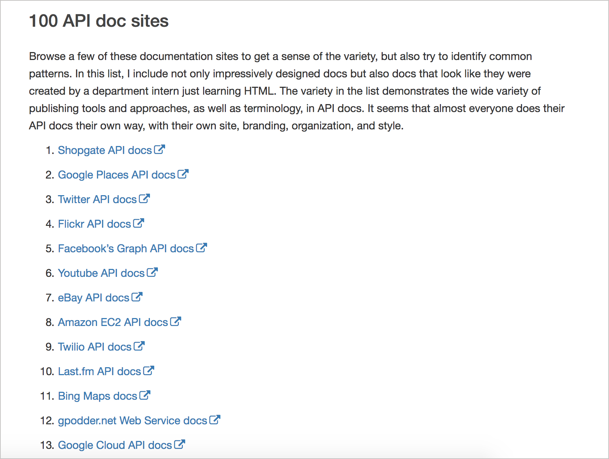
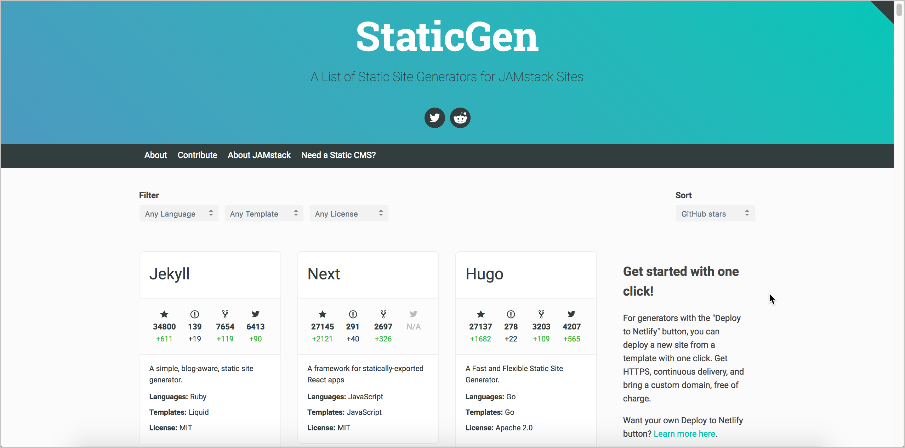

	<body>
    <div class="reveal innovation">
       <!-- Any section element inside of this container is displayed as a slide -->
       <div class="slides">
          <section>
             <h1>{{page.slide_title}}</h1>

             <p>
                <small>By Tom Johnson / <a target="_blank" href="http://twitter.com/tomjohnson">@tomjohnson</a><br/>
                <a target="_blank" href="http://idratherbewriting.com">idratherbewriting.com</a></small><br/><br/>
                <p><small>Slides available at <br/><a target="_blank" href="http://idratherbewriting.com/learnapidoc/slides/publishing_api_docs/">idratherbewriting.com/learnapidoc/slides/publishing_api_docs</a></small></p>
             </p>
          </section>

<section>
            <h2>What I'll talk about</h2>
          <ul style="font-size: 90%">
            <li>What makes dev doc unique</li>
            <li>Dev doc design patterns</li>
            <li>Docs-as-code characteristics</li>
            <li>Markdown and version control</li>
            <li>REST APIs and OpenAPI spec</li>
            <li>The jungle of publishing tools</li>
            <li>Lessons learned</li>
            </ul>
          </section>

          <section>
            <h2>"API docs" versus "developer" docs</h2>
            <ul>
              <li>All API docs are developer docs, but not vice versa</li>
              <li>API docs include both ref and non-ref content</li>
            </ul>
          </section>

          <section>
            <h2>Why focus on publishing API docs?</h2>
            <a href="https://idratherbewriting.com/learnapidoc/images/whyapidocsfail.png"></a>
          </section>

            <section>
            <h2>Why not use traditional HATs?</h2>

            <a href="http://bit.ly/photobucketlongurl"></a>
            <aside class="notes">
            <ul>
              <li>Developers are authors</li>
              <li>API structure/templates</li>
              <li>API requests demo'd on page</li>
              <li>API docs are the product interface</li>
            </ul>
          </aside>
</section>

          <section>
            <h2>Survey of API doc sites</h2>
            <a href="pubapis_list.html"></a>
          </section>

          <section>
            <h3 class="activity"><i class="fa fa-user-circle"></i> Activity 7a: Identify common patterns in API doc sites</h3>
            

          </section>

          <section>
            <h2>Design patterns with API doc sites</h2>
            <ul>
              <li>Pattern 1: Structure and templates</li>
              <li>Pattern 2: A single seamless website</li>
              <li>Pattern 3: Abundant code samples</li>
              <li>Pattern 4: Lengthy pages</li>
              <li>Pattern 5: API Interactivity</li>
            </ul>
          </section>

          <section>
            <h2>The Docs as Code model</h2>
            
          </section>

          <section>
            <h2>Characteristics of docs as code</h2>

            <ul>
              <li>Lightweight markup</li>
              <li>Static site generators</li>
              <li>IDE-like text editor</li>
              <li>Git to manage content</li>
              <li>Build from server</li>
            </ul>
          </section>

          <section>
            <h2>Markdown is most common syntax</h2>

            <pre><code class="hljs" data-trim contenteditable>
## Heading 2

This is a bulleted list:

* fireStructuredText item
* second item
* third item

This is a numbered list:

1. Click this **button**.
2. Go to [this site](http://www.example.com).
3. See this image:


            </code></pre>
          </section>

          <section>
            <h2>Why use Markdown</h2>
            <ul>
              <li>Readable as code</li>
              <li>Compatible with Git</li>
              <li>Simple enough for devs</li>
              <li>Flexible enough to do almost anything</li>
              <li>Define semantics in frontmatter</li>
              <li>For more complexity, use HTML or scripting languages</li>
            </ul>
          </section>

<section>
  <h3 class="activity"><i class="fa fa-user-circle"></i> Activity 7b: Practice with Markdown</h3>
  

</section>
          <section>
            <h2>Version control systems (Git)</h2>

            <a href="https://github.com"></a>
            <aside class="notes">
            <ul>
              <li>Ingenious way to collaborate</li>
              <li>Helps you understand engineering workflows</li>
              <li>More of a learning curve than your SSG</li>
              <li>The Git model scales</li>
            </ul>
          </aside>
          </section>

          <section>
            <h3 class="activity"><i class="fa fa-user-circle"></i> Activity 7c: Set up a GitHub wiki</h3>
            

          </section>

          <section>
            <h3 class="activity"><i class="fa fa-user-circle"></i> Activity 7d: Clone your GitHub repo locally</h3>
            

          </section>

          <section>
            <h3 class="activity"><i class="fa fa-user-circle"></i> Activity 7e: Push local changes to the remote</h3>
            

          </section>

          <section>
            <h2>Authoring and publishing tools</h2>
            
          </section>

            <section>
              <h2>4 categories of tools</h2>
                <ol>
                  <li>Static site generators</li>
                  <li>Hosting and deployment options</li>
                  <li>Headless CMS options</li>
                  <li>Tools to render OpenAPI spec</li>
                </ol>
              </section>

            <section>
              <h2>1. Static site generators</h2>
              <a href="https://staticgen.com"></a>
                <p style="font-size: .7em; padding: 15px;">Look for ... Speed &bull; Format &bull; Community</p>
              </ul>
            </section>

            <section>
              <h2>2. Hosting and deployment options</h2>
              <ul>
                <li><a target="_blank" href="https://pages.github.com/">GitHub Pages</a></li>
                <li><a target="_blank" href="https://cloudcannon.com/">CloudCannon</a></li>
                <li><a target="_blank" href="https://www.netlify.com/">Netlify</a></li>
                <li><a target="_blank" href="https://www.aerobatic.com/">Aerobatic</a></li>
              </ul>

              <p style="font-size: .7em; padding: 15px;">Look for ... Continuous delivery &bull; GitHub Integration</p>
            </ul>
            </section>

            <section>
              <h2>3. Headless CMS options?</h2>
              <ul>
                <li><a target="_blank" href="https://forestry.io/">Forestry.io</a></li>
                <li><a target="_blank" href="https://www.netlifycms.org/">Netlify CMS</a></li>
                <li><a target="_blank" href="http://readme.io/">Readme.io</a></li>
                <li>+ dozens more</li>
              </ul>

            </section>

            <section>
              <h2>4. Tools to render OpenAPI spec</h2>
              <ul>
                <li><a target="_blank" href="https://swagger.io/swagger-ui/">Swagger UI</a> (<a target="_blank" href="http://idratherbewriting.com/learnapidoc/pubapis_swagger_demo.html">Demo</a>)</li>
                <li><a target="_blank" href="https://swaggerhub.com">SwaggerHub</a> (<a target="_blank" href="https://app.swaggerhub.com/apis/IdRatherBeWriting/MashapeWeatherAPI/2.3">Demo</a>)</li>
                <li><a target="_blank" href="https://readme.io">Readme.io</a> (<a target="_blank" href="https://apitest.readme.io/docs">Demo</a>)</li>
                <li><a target="_blank" href="https://sourcey.com/spectacle">Spectacle</a> (<a target="_blank" href="https://cheesestore.github.io/">Demo</a>)</li>
                <li><a target="_blank" href="http://stoplight.io/">Stoplight.io</a>(<a target="_blank" href="https://app.stoplight.io/wk/Jj82MQXLoWG4hfz3t/4h4h8xoQLJpwjweDx/XknprcEELR39Lv3ro/design/endpoints">Demo</a>)</li>
                <li><a target="_blank" href="https://apimatic.io">APIMATIC.io</a> (<a target="_blank" href="https://apimatic.io/apidocs/sample-portal/v/1_0#/">Demo</a>)</li>
                  <li><a target="_blank" href="https://restlet.com/modules/studio/">Restlet Studio</a> (<a target="_blank" href="https://studio.restlet.com/apis/local/resources/~2Fcontacts~2F/operations/post">Demo</a>)</li>

              </ul>

              <p style="font-size: .7em; padding: 15px;">Look for ... API Explorer &bull; SDK gen. &bull; Versioning &bull; Collab.</p>

            </section>


            <section>
              <h2>Integration challenges</h2>

                

            </section>

         <section>
            <h2>Which tool to choose for API docs?</h2>
            <ol>
              <li>Define your requirements</li>
              <li>Choose your priorities</li>
              <li>Consider the time you want to spend on tools</li>
              <li>Hope that you don't sink months into the wrong tools</li>
            </ol>
          </section>


<section>
  <h2>My current setup at work</h2>
  <ul>
    <li>Jekyll + custom theme with no header/footer</li>
    <li>Use existing internal Git infrastructure</li>
    <li>Custom-built publishing pipeline</li>
      <ul><li>Builds output, then ingests HTML into S3</li>
        <li>Server requests pull matching files from S3 store and inserts into template with header/footer</li>
      </ul>
            </ul>
    <p><a target="_blank" href="https://developer.amazon.com/appstore/documentation">View sample</a></p>
</section>

<section>
  <h2>Lessons learned</h2>
  
</section>

          <section>
            <h2>My experience with docs-as-code</h2>
            <ul>
              <li>Mostly love it, would never go back</li>
              <li>Continuous deployment with Git is the killer feature</li>
              <li>Love the control and flexibility of open source SSG</li>
              <li>Takes way more time than you think</li>
              <li>No good solution for search or translation</li>
            </ul>
          </section>

        </section>
    <section>
      <h2>Questions?</h2>
      
      </section>
÷
		<script src="lib/js/head.min.js"></script>
		<script src="js/reveal.js"></script>

		<script>
			// More info about config & dependencies:
			// - https://github.com/hakimel/reveal.js#configuration
			// - https://github.com/hakimel/reveal.js#dependencies
			Reveal.initialize({
        history: true,
        center: false,
        progress: true,
        slideNumber: true,
				dependencies: [
					{ src: 'plugin/markdown/marked.js' },
					{ src: 'plugin/markdown/markdown.js' },
					{ src: 'plugin/notes/notes.js', async: true },
					{ src: 'plugin/highlight/highlight.js', async: true, callback: function() { hljs.initHighlightingOnLoad(); } }
				]
			});
		</script>
	</body>
</html>
